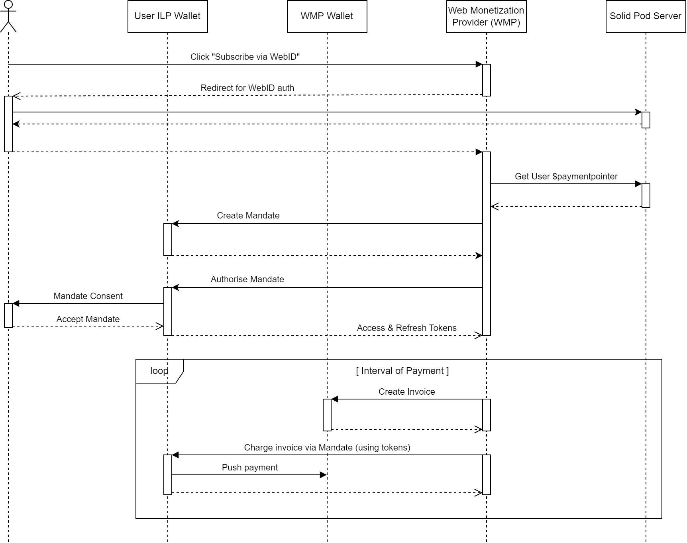
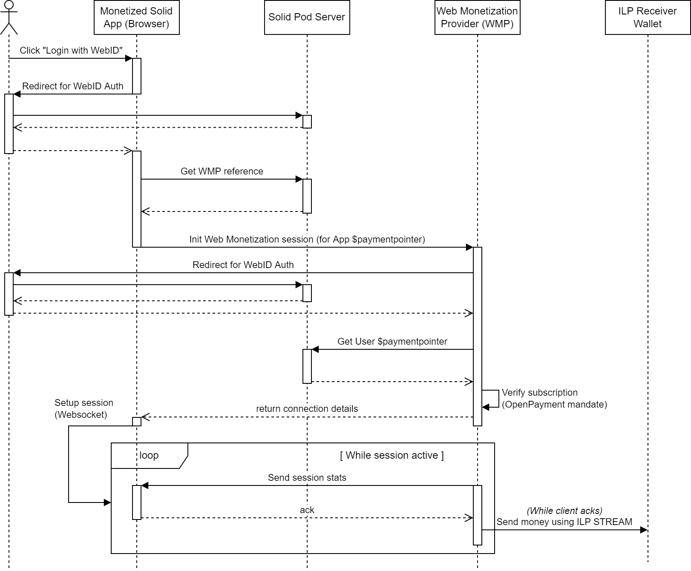

This specification is a proposal for how [[Solid]] can be leveraged to open up the [[Web Monetization]] ecosystem,
making it easy for content creators to receive micro-payments in a generic way and avoiding vendor lock-in
by allowing content consumers to freely choose a supported [[Web Monetization]] provider.
This document is the description of a proposal for the integration of [[Solid]] and [[Web Monetization]], with the goal of innovating upon the latter.
The proposal was formed as part of a Proof of Concept solution in the context of the [[Grant for the Web]].
## Goals
In the context of [[Grant for the Web]], our initial goal was to integrate [[Web Monetization]] with [[Solid]] applications, enabling [[Solid]] users to consume monetized content from [[Solid]] enabled applications without needing to rely on browser extensions. Our research efforts uncovered some limitations of the existing protocols and this specification should be interpreted as a proposal for a possible solution that aims to mitigate these limitations, with the goal of furthering the discussion.
These limitations can be defined as follows:
1. The heterogeneity of [[Interledger]] (ILP) wallet implementations makes it difficult to encapsulate the logic required for streaming payments between wallets (because they use different protocols, different authentication schemes, etc).
2. There is a lack of mechanisms for reliably and securely performing these payments on behalf of the user.
3. There is an inherent issue of trust, by requiring the client to orchestrate the payment setup and thus determining the rate and the amount of the payment stream.
We propose the introduction of a [[Web Monetization]] provider or WMP, as the generic component that can be deployed as an additional layer of abstraction to help solve some of these limitations. Section [](#wmp-def) formalizes the role of such a WMP.
## Definition of a Solid Web Monetization provider (WMP) {#wmp-def}
By introducing the WMP as a trusted third party between the content consumer (sending party) and the content creator (receiving party), a new level of abstraction is added that helps to solve some of the current [[Web Monetization]] limitations.
1. The complexity of dealing with the heterogeneity of [[Interledger]] wallet implementations is handled by the WMP. This makes it easier for client developers to create [[Web Monetization]] enabled applications.
2. The WMP handles streaming payments for monetized sessions. In exchange the user subscribes to the WMP by paying a monthly fee, or funds the WMP for a predetermined amount (see note). The WMP is free to choose its revenue model and spending strategy. This loose coupling adds a lot of flexibility to the [[Web Monetization]] model and again helps to reduce client-side complexity.
3. The WMP API is an open specification, enabling different parties to compete in providing WMP services. This benefits the users as they can now choose which WMP to trust as their [[web Monetization]] agent, and can easily switch providers at any time while still being able to consume the monetized content in the same way. This model perfectly aligns with the [[Solid]] philosophy.
Although the revenue model for a WMP can be flexible (subscription model, prefunded, etc), we have chosen to limit the specification that follows to a subscription model only.
The WMP can be defined as a set of HTTP endpoints, which can be split up in three categories:
### Authentication operations
Clients must authenticate on behalf of a user with a WMP server using [[Solid]] WebID. This authentication process should conform to the [[Solid-OIDC]] specification.
Once authenticated, a client can interact with the contextualized subscription and session endpoints (`/me/...`).
### Subscription operations
The subscription operations allow an authenticated user to create a new subscription, or to interact with an existing subscription. A subscription links a [[Solid]] WebID to an [[Open Payments]] mandate formalizing the recurring charge that will be applied to the user's Wallet. The [[Open Payments]] specification is an extension of the [[simple-payment-setup-protocol]] or SPSP, one of the ILP protocols used for discovering (technical) details for a Wallet, starting from a Payment Pointer (see [[payment-pointers]]). The [[Open Payments]] protocol defines how a WMP can discover the user's wallet, create a mandate for a recurring payment and then periodically submit new charges for this mandate in a secure way.
WMP servers must support the following subscription operations:
* Creating a new subscription via [`POST /me/subscription`](#post-me-subscription)
* Retrieving details (including the state) of a subscription via [`GET /me/subscription`](#get-me-subscription)
* Getting a (proxied) representation of the [[Open Payments]] mandate linked to the subscription via [`GET /me/subscription/mandate`](#get-me-subscription-mandate)
* Cancelling a subscription via [`DELETE /me/subscription`](#delete-me-subscription)
The flow of how a subscription is initialized, and how charges are then made towards the subscription mandate, is detailed in section [](#subscribing-to-a-web-monetization-provider).
### Session operations
Authenticated clients interfacing with a WMP on behalf of a user with an active subscription, can initiate WMP sessions which will grant the user access to monetized content on [[Solid]] enabled applications. The flow of how such a session is set up and used, is detailed in section [](#consuming-monetized-content).
WMP servers must support the following session operations:
* Creating a new session via [`POST /me/sessions`](#post-me-sessions)
* Activating a created session by connecting to a Websocket at [`/me/sessions/{sessionId}/channel`](#websocket-me-sessions-sessionid-channel)
To provide additional feedback to the user and give clients more control, WMP servers can optionally support the following additional session operations:
* Retrieving a list of active monetization sessions via [`GET /me/sessions`](#get-me-sessions)
* Retrieving the details of an active monetization session (including e.g. amount spent) via [`GET /me/sessions/{sessionId}`](#get-me-sessions-sessionid)
* Manually closing a session (e.g. to stop the session in case of a malicious or buggy client) via [`DELETE /me/sessions/{sessionId}`](#delete-me-sessions-sessionid)
## Flow
This section is used to define the interaction patterns of a WMP server with other actors in the monetization flow: users/clients, [[Solid]] Pods/Identity providers, ILP Wallets, etc. These interactions can be split up into two main scenarios: [](#subscribing-to-a-web-monetization-provider) and [](#consuming-monetized-content).
### Subscribing to a Web Monetization provider
**Context**: A user wishes to consume monetized content and visits the web page of the WMP she/he has chosen.
1. The user goes to the subscription page, fills in the Payment Pointer (see [[payment-pointers]]) she/he wants to use and clicks the "Subscribe via WebID" button. This triggers a redirect to handle WebID authentication. The WMP must provide a URL as the target address for the callback that is executed upon successful completion of the authentication process (conform [[Solid-OIDC]]).
2. The browser client follows the redirect, allowing the user to authenticate with her/his Solid Pod. If successful, the flow is redirected back to the WMP via the provided callback URL.
3. The WMP then verifies if the Payment Pointer provided by the user can be found in the WebID linked to the authentication session by contacting the Solid Pod server of the user (see section [](#payment-pointer) on how a Payment Pointer is linked to a WebID).
4. Once the Payment Pointer is verified, the WMP can resolve this Payment Pointer via SPSP to discover the user's Wallet. Using this information, the WMP can construct a request to create a mandate representing the recurring payment for subscription (according to [[Open Payments]]).
5. If the mandate was successfully created, the WMP can request the user's Wallet to authorize the mandate. This will result in the Wallet server asking for consent with the user, leading to the mandate being accepted. This interaction completes with the WMP being granted access & refresh tokens that will allow the WMP to make authorized charges on the mandate (according to [[Open Payments]]).
Once the mandate has been created and authorized, it is the responsibility of the WMP to act upon this mandate by creating charges (in accordance with payment details that were specified when creating the mandate). Each time the payment is triggered (via a background process of the WMP):
1. The WMP must create an invoice on the ILP Wallet associated with the WMP.
2. This invoice is then charged on the mandate. This request is authorized using the refresh and access tokens that are stored for each individual subscription in the WMP.
3. The Wallet of the user will react on the creation of this invoice by initiating a push payment towards the Wallet of the WMP.

Sequence diagram for the flow "Subscribing to a Web Monetization provider"
Note: see [[Open Payments: Recurring Payments]] for details regarding the protocol for setting up recurring payments in [[Open Payments]].
### Consuming monetized content
**Context**: A user visits a Solid web application, which contains monetized content.
1. If there is no previous session for the application, the user starts the monetized session by clicking the button "Login with WebID". This triggers a redirect to handle WebID authentication. The client must provide a URL as the target address for the callback that is executed upon successful completion of the authentication process.
2. The browser follows the redirect, allowing the user to authenticate with her/his Solid Pod. If successful, the flow is redirected back to the WMP via the provided callback URL.
3. The callback URL triggers the application to contact the user's Solid Pod on behalf of the user, with the goal of checking if the WebID contains a WMP reference (see section [](#wmp-reference)), and if so, to retrieve this reference.
4. Upon retrieving and resolving the WMP reference, the client can now attempt to set up the monetization session by sending a request to the discovered WMP server to create a session.
5. Ideally, this again triggers an authentication process similar to the one described in steps 1-3, but this time with the WMP as the target for Solid WebID authentication instead of the monetized Solid (client) application. Alternatively, the Solid access token returned to the client by the authentication process in steps 1-3 can also serve as a proof of identity for the Solid user.
6. Next, the WMP verifies the Solid user's subscription by:
- Fetching the Payment Pointer from the user's Solid Pod (WebID). The Wallet referenced by this Payment Pointer should match the Wallet where the mandate associated with the subscription is registered.
- Validating the mandate associated with the subscription (i.e. fetching the mandate details, checking the mandate has not yet expired).
7. The WMP concludes the session setup process, by returning a session ID (and optionally other connection details).
8. The client then opens a Websocket using the result of the session setup process. The Websocket is used to track the monetization session. While the Websocket is connected, the WMP can send updates in the form of statistics regarding the micro-payments that are executed by the WMP in the background.

Sequence diagram for the flow "Consuming monetized content"
## Specification
### Linked Data Properties
#### Payment Pointer
The linked data representation of a Payment Pointer is a resource of RDF type `https://paymentpointers.org/ns#InterledgerPaymentPointer`, with at least a property `https://paymentpointers.org/ns#paymentPointerValue` of type String, linking the actual Payment Pointer.
A Solid WebID can have a registered Payment Pointer, by linking the Payment Pointer resource from the profile using the property `https://paymentpointers.org/ns#hasPaymentPointer`.
#### WMP Reference
The linked data representation of a WMP Reference is a resource of RDF type `https://webmonetization.org/ns#Provider`, with at least a property `https://webmonetization.org/ns#apiUrl`, referencing the base API URL of the WMP.
A Solid WebID can have a registered WMP Reference, by linking the WMP Reference resource from the profile using the property `https://webmonetization.org/ns#hasProvider`.
A WMP Reference linked to the Solid WebID, allows monetized Solid applications to automatically detect the WMP server the client should connect with to further handle the monetized session. This loose coupling between monetized Solid applications and WMP implementations is important for creating an equal playing field, enabling various WMP providing parties to compete in an open ecosystem. In our opinion, this will be a crucial driver for boosting the prominence of Web Monetization.
### API endpoints
#### Subscriptions
##### POST /me/subscription
A client creates a subscription by performing an HTTP POST of a JSON document (defined in section [](#subscriptioninput)) to the subscriptions API endpoint.
The WMP server must respond with a `201 Created` response upon successful creation and initialization of the subscription (i.e. 1. creating a mandate at the user's Wallet referenced by the supplied Payment Pointer and 2. registering the WMP with the [[Solid]] Pod of the user), otherwise an error response is returned.
##### GET /me/subscription
The client gets details about a subscription by performing an HTTP GET to the subscriptions API endpoint. If a subscription for the authenticated user exists, the WMP server must respond with a `200 Ok` and a JSON document (defined in section [](#subscription)) as the response body. If the subscription does not exist, the WMP server must respond with a `404 Not Found`.
##### GET /me/subscription/mandate
A client can retrieve the [[Open Payments]] mandate details via the WMP server by performing an HTTP GET to `/me/subscription/mandate`. If a subscription for the authenticated user exists, the referenced mandate should exist on the Wallet of the user (otherwise the subscription is no longer valid), in which case the WMP server can proxy serve the mandate details by responding with a `200 Ok` and a JSON document as the response body. If the subscription does not exist, the WMP server must respond with a `404 Not Found`.
##### DELETE /me/subscription
A client can cancel a subscription by performing an HTTP DELETE to the subscription API endpoint. If a subscription for the authenticated user exists, the WMP server must delete the associated mandate on the user's Wallet and deregister the WMP reference from the user's [[Solid]] pod, after which a `204 No Content` is responded to the client, indicating the cancellation was completed successfully. If there is no subscription, the WMP server responds with `404 Not Found`. In case of other exceptions, the WMP server responds with an appropriate error response.
#### Sessions
##### GET /me/sessions
A WMP server can optionally support clients listing active sessions by performing an HTTP GET to `/me/sessions`. The WMP server responds with a `200 Ok` and a JSON document containing an array of JSON objects having at least an id property (the session ID).
##### POST /me/sessions
A client requests the initialization a monetization session by performing an HTTP POST of a JSON document (defined in section [](#monetizationsessioninput)) to the sessions API endpoint.
The WMP server must respond with a `201 Created` response and a JSON document containing the ID of this new session, upon successful initialization of the session, otherwise an error response is returned.
##### GET /me/sessions/{sessionId}
A WMP server can optionally support clients retrieving active session details by performing an HTTP GET to `/me/sessions/{sessionId}`. The WMP server responds with a `200 Ok` and a JSON document containing a JSON document as defined in section [](#monetizationsession).
##### DELETE /me/sessions/{sessionId}
A WMP server can optionally support clients closing an active session by performing an HTTP DELETE to `/me/sessions/{sessionId}`. The WMP server responds with a `204 No Content` when the session was successfully closed. Although this operation is not required to implement the monetization flow, it can be useful for a WMP to support it, e.g. to stop a session in case of a malicious or buggy client.
##### Websocket /me/sessions/{sessionId}/channel
Using the sessionId received upon creating a session, a client then opens a two-way communication channel with the WMP server to allow tracking the session. For this purpose, the WMP server must support opening a Websocket at `/me/sessions/{sessionId}/channel`. The lifecycle of the Websocket must be directly tied to that of the session, e.g. when the Websocket is closed, the session is immediately stopped as well, cancelling any ILP background transactions.
The client may receive regular updates informing the user of the status of the monetized session, through messages that are sent over the Websocket. The content of such a message is defined in section [](#ilpstreamupdate)
### Types
#### SubscriptionInput
A `SubscriptionInput` is an object instance that must have the following property:
* `paymentPointer` (type String): the Payment Pointer (see [[payment-pointers]]) to use for creating the subscription.
#### Subscription
A `Subscription` is an object instance that has the following properties:
* `userId` (type String/URI, required): the [[Solid]] WebID of the owner of the subscription. This id also identifies the subscription, as it does not make sense for a user to have multiple subscriptions with the same WMP.
* `paymentPointer` (type String, required): the Payment Pointer to the Wallet that was used to create the subscription.
* `mandateURI` (type String/URI, required): URI referencing the mandate in the user's Wallet that is associated with the subscription.
* `valid` (type Boolean, optional): a boolean value indicating if the subscription is valid (i.e. the mandateURI can be resolved and the associated mandate has not yet expired).
#### MonetizationSessionInput
A `MonetizationSessionInput` is an object instance that must have the following property:
* `targetPaymentPointer` (type String): the Payment Pointer (see [[payment-pointers]]) representing the Wallet of the content creator. The WMP will use this Wallet as the target for the micro-payments that are streamed during the session.
#### MonetizationSession
A `MonetizationSession` is an object instance that has the following properties:
* `id` (type String, required): the unique identifier for the session.
* `target` (type String, required): the Payment Pointer (see [[payment-pointers]]) representing the Wallet of the content creator. The WMP will use this Wallet as the target for the micro-payments that are streamed during the session.
* `totalAmountTransferred` (type Long, optional): the total sum of the micro-payments that were successfully submitted during the session.
* `assetCode` (type String, required if `totalAmountTransferred` is present): the ILP asset code used during the transactions.
* `assetScale` (type Int, required if `totalAmountTransferred` is present): the ILP asset scale used during the transactions.
#### ILPStreamUpdate
A `ILPStreamUpdate` is an object instance that has the following properties:
* `amount` (type Long, required): the sum of the micro-payments that were successfully submitted since the previous update (or since the start if no previous update was emitted).
* `assetCode` (type String, required): the ILP asset code used during the transaction.
* `assetScale` (type Int, required): the ILP asset scale used during the transaction.
* `timeRange` (type TimeRange, optional): specifies the interval (defined by a start and end [[rfc3339]] datetime) during which the `amount` specified by the update was streamed (e.g. this can be useful for the client to predict the expected payment total).
## Future work
send triggers from client, multiple modes